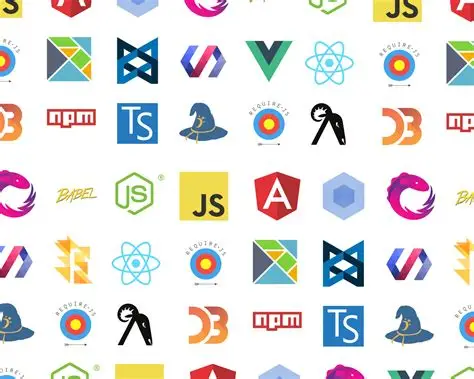

Introdução

No desenvolvimento de software, a busca por produtividade, padronização e qualidade levou à adoção generalizada de frameworks. Um framework pode ser entendido como uma estrutura pré-definida — um conjunto de ferramentas, bibliotecas, padrões e boas práticas — que serve de base para a construção de aplicações, evitando que o desenvolvedor precise recomeçar cada projeto do zero.
Frameworks estão presentes em praticamente todas as áreas da programação: no front-end, no back-end, no desenvolvimento mobile e até em metodologias de trabalho, como o Scrum. Compreender seu conceito, seus tipos, suas vantagens e desvantagens, além dos critérios que orientam a escolha de um framework adequado, é fundamental para qualquer profissional que atue com tecnologia.
Este trabalho tem como objetivo apresentar, de forma organizada, o conceito de framework, a diferença entre framework e biblioteca, os principais tipos e exemplos utilizados no mercado, e os critérios que devem ser considerados na hora de escolher um framework para um projeto.
Desenvolvimento
O que é um framework?
De forma geral, um framework é uma estrutura de software abstrata e reutilizável que fornece um conjunto de funcionalidades genéricas, as quais podem ser estendidas ou personalizadas pelo programador para atender a necessidades específicas de um projeto. Ele funciona como um "esqueleto" da aplicação: define a arquitetura, organiza o fluxo de execução e oferece componentes prontos para tarefas recorrentes, como conexão com banco de dados, autenticação de usuários e tratamento de erros.
Um aspecto central do conceito é a chamada Inversão de Controle (IoC): diferente de uma biblioteca comum, em que o programador chama o código quando necessário, no framework é a própria estrutura que comanda o fluxo da aplicação, chamando o código do desenvolvedor nos pontos definidos por ela.
Framework x Biblioteca
Embora os termos sejam frequentemente usados como sinônimos, framework e biblioteca possuem diferenças importantes. Uma biblioteca é um conjunto de funções ou métodos prontos que o desenvolvedor chama conforme a necessidade, mantendo o controle total do fluxo do programa. Um framework, por sua vez, é mais abrangente: define uma arquitetura completa, dita o fluxo de execução da aplicação e cabe ao desenvolvedor apenas preencher as partes específicas do projeto dentro da estrutura já estabelecida.
Tipos de framework
Os frameworks podem ser classificados de acordo com a área de aplicação. Entre os principais tipos, destacam-se:
- Frameworks de front-end: utilizados para criar interfaces de usuário (UI), como React, Angular e Vue.js.
- Frameworks de back-end: responsáveis pela lógica do servidor, banco de dados e regras de negócio, como Django e Flask (Python), Laravel e Symfony (PHP), Spring/Spring Boot (Java) e Express.js (Node.js).
- Frameworks mobile: voltados para o desenvolvimento de aplicativos, como Flutter e React Native.
- Frameworks CSS: focados em estilização e responsividade, como o Bootstrap.
- Frameworks conceituais/metodológicos: aplicados fora da programação, como o Scrum e o Kanban na gestão ágil de projetos.
Vantagens do uso de frameworks
- Produtividade: reduzem o tempo de desenvolvimento, pois evitam que tarefas repetitivas sejam recriadas do zero.
- Padronização: seguem convenções de código, o que facilita a manutenção e a colaboração em equipe.
- Segurança: muitos frameworks já incluem mecanismos de proteção contra ameaças comuns, como injeção de SQL e ataques XSS.
- Comunidade e suporte: frameworks populares contam com grandes comunidades, ampla documentação e diversas extensões.
- Escalabilidade: fornecem uma arquitetura organizada, o que facilita o crescimento da aplicação ao longo do tempo.
Desvantagens e cuidados
- Curva de aprendizagem: dominar um framework pode exigir tempo, principalmente para desenvolvedores iniciantes.
- Dependência tecnológica: uma aplicação construída sobre um framework específico dificilmente é portada para outro sem retrabalho significativo.
- Excesso de recursos: em projetos pequenos, um framework robusto pode ser mais complexo do que o necessário.
Exemplos populares de frameworks
- React (JavaScript) — biblioteca/framework de front-end para interfaces baseadas em componentes.
- Angular (TypeScript) — framework de front-end mantido pelo Google, indicado para aplicações de grande escala.
- Vue.js (JavaScript) — framework de front-end conhecido pela curva de aprendizagem suave.
- Django (Python) — framework back-end "batteries-included", com foco em segurança e produtividade.
- Laravel (PHP) — framework back-end que segue o padrão MVC, popular no desenvolvimento web.
- Spring/Spring Boot (Java) — framework back-end voltado a aplicações corporativas robustas.
- Flutter (Dart) — framework para desenvolvimento de aplicativos mobile multiplataforma.
Critérios para a escolha de um framework
A escolha do framework ideal para um projeto não deve ser feita de forma aleatória, mas com base em critérios objetivos que consideram tanto as necessidades técnicas quanto o contexto da equipe. Entre os principais critérios estão:
- Requisitos do projeto: tipo de aplicação (web, mobile, API), complexidade e desempenho esperado.
- Experiência da equipe: usar uma tecnologia já dominada pelo time reduz riscos e acelera as entregas.
- Comunidade e documentação: frameworks com comunidades ativas e boa documentação facilitam a resolução de problemas.
- Escalabilidade: capacidade do framework de suportar o crescimento da aplicação.
- Curva de aprendizagem: tempo necessário para a equipe se tornar produtiva com a ferramenta.
- Segurança: recursos nativos de proteção contra vulnerabilidades comuns.
- Manutenção e atualizações: histórico de suporte contínuo e frequência de atualizações do framework.
- Licença de uso: é importante verificar o tipo de licença (como MIT ou GPL), pois pode impactar o uso comercial da aplicação.
Conclusão
Os frameworks se consolidaram como ferramentas essenciais no desenvolvimento de software moderno, pois oferecem estruturas prontas que aumentam a produtividade, padronizam o código e reduzem a necessidade de reescrever soluções para problemas recorrentes. Apesar das vantagens, é importante reconhecer que nenhum framework é universalmente ideal: a escolha adequada depende do tipo de projeto, da experiência da equipe e dos requisitos específicos de cada aplicação.
Dessa forma, conhecer os diferentes tipos de frameworks, suas vantagens, desvantagens e os critérios de escolha é fundamental para que desenvolvedores e equipes tomem decisões mais assertivas, otimizando tempo, custos e qualidade no desenvolvimento de sistemas e aplicações.
Referências
- ASIMOV ACADEMY. Framework: o que é, tipos, exemplos e como escolher. Disponível em: hub.asimov.academy. Acesso em: 2026.
- BOHNER, Andréia. 10 critérios para a escolha do framework correto. Disponível em: traducoes.andreiabohner.org. Acesso em: 2026.
- BR24. O que é framework: conceito, aplicação, tipos e vantagens. Disponível em: br24.io. Acesso em: 2026.
- MESTRES DA WEB. Frameworks de desenvolvimento: principais usados. Disponível em: mestresdaweb.com.br. Acesso em: 2026.
- MO4 WEB. O que são frameworks e como utilizar no desenvolvimento web. Disponível em: mo4web.com.br. Acesso em: 2026.
- OLHAR DIGITAL. O que são Frameworks? Disponível em: olhardigital.com.br. Acesso em: 2026.
- PROGRAMATHOR. Como descobrir o framework ideal para o seu projeto. Disponível em: programathor.com.br. Acesso em: 2026.
- SEJA. Frameworks Modernos para Desenvolvimento Web: Como Escolher o Ideal. Disponível em: seja.tec.br. Acesso em: 2026.